Contents
DIPUM 3rd edition | Project 4 - Chapter 6 on Transformations Sierpinski triangle Author: Ernesto Colon Date: 2.20.21 ECE419 - Digital Image Processing @ The Cooper Union
clc; clear all; close all
This project explores compositions of affine transforms and implementing rotation as three successive shearing operations: a horizontal shear, followed by a vertical shear, followed by another horizontal shear. This can sometimes be of practical interest because each shearing operation can be implemented by shifting and interpolating image pixels in only one direction. For a rotation angle of , the three affine shear matrices are:
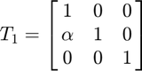
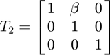
![$$T_3 = \left[\matrix{ 1 & 0 & 0 \cr \gamma & 1 & 0 \cr 0 & 0 & 1} \right]$$](dipum_proj4_eq15686976604427131873.png)
where 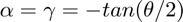 and 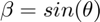
part a Make a 4 x 2 matrix containing the four vertices, (0.5, 0.5), (-0.5, 0.5), (-0.5, -0.5), and (-0.5, -0.5), of a unit square centered at the origin. Plot the square containig these vertices.
unit_square = [0.5 0.5; -0.5 0.5; -0.5 -0.5; 0.5 -0.5; 0.5 0.5] % plot the unit square figure plot(unit_square(:,1), unit_square(:,2), '-') axis([-2 2 -2 2], 'equal') hold on
unit_square =
0.5000 0.5000
-0.5000 0.5000
-0.5000 -0.5000
0.5000 -0.5000
0.5000 0.5000
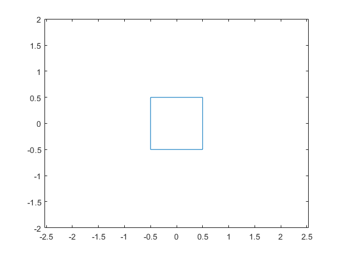 part b Make three affine2d objects using the three affine transform matrixes shown aboe and 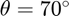. In three steps, apply these affine transforms successively to the vertices of the square and superimpose plots
theta = 70; xfm_shear_1 = affine2d([1 0 0; -tan(theta/2) 1 0; 0 0 1]); % apply transformation to vertices of unit square unit_square_xfm_1 = transformPointsForward(xfm_shear_1, unit_square); % plot the rotated square plot(unit_square_xfm_1(:,1), unit_square_xfm_1(:,2), '--') hold on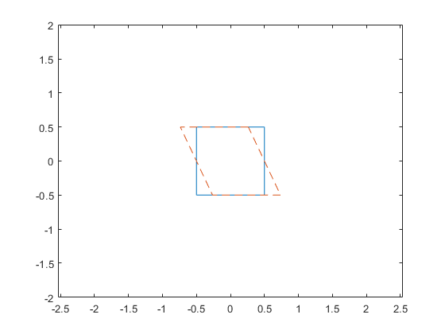
second shear transformation
xfm_shear_2 = affine2d([1 sin(theta) 0; 0 1 0; 0 0 1]); % apply transformation to vertices of unit square unit_square_xfm_2 = transformPointsForward(xfm_shear_2, unit_square_xfm_1); % plot the rotated square plot(unit_square_xfm_2(:,1), unit_square_xfm_2(:,2), '-.') hold on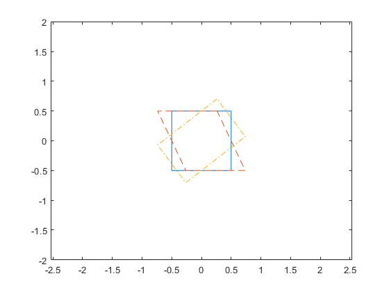
third shear transformation
xfm_shear_3 = affine2d([1 0 0; -tan(theta/2) 1 0; 0 0 1]); % apply transformation to vertices of unit square unit_square_xfm_3 = transformPointsForward(xfm_shear_3, unit_square_xfm_2); % plot the rotated square plot(unit_square_xfm_3(:,1), unit_square_xfm_3(:,2), '--.') hold on legend('Unit Square','First Hor. Shear','Second Vert. Shear','Third Vert. Shear')

part c
successively apply the three affine trasnformations to the image 'apple-hill-2013.png' using imwarp.
img_appl_hill = imread('../images/apple-hill-2013.png'); figure subplot(2,2,1) imshow(img_appl_hill) title("Original Image")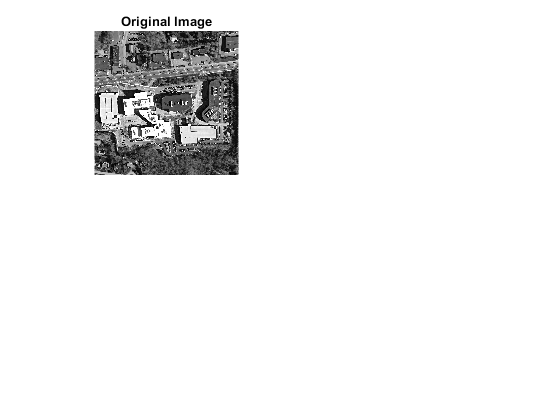
apply first affine transformation
img_shear_hor_1 = imwarp(img_appl_hill, xfm_shear_1);
subplot(2,2,2)
imshow(img_shear_hor_1)
title("Image after first horizontal shear")
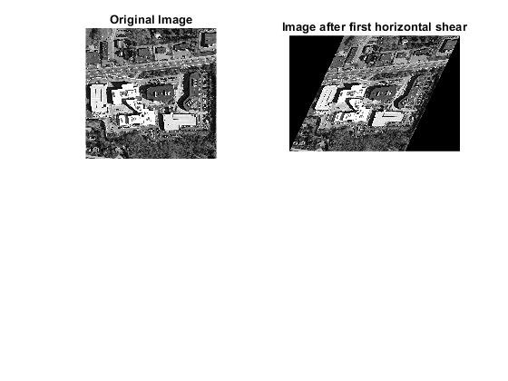 apply seccond affine transformation
img_shear_ver_2 = imwarp(img_shear_hor_1, xfm_shear_2);
subplot(2,2,3)
imshow(img_shear_ver_2)
title("Image after second shear (vertical)")
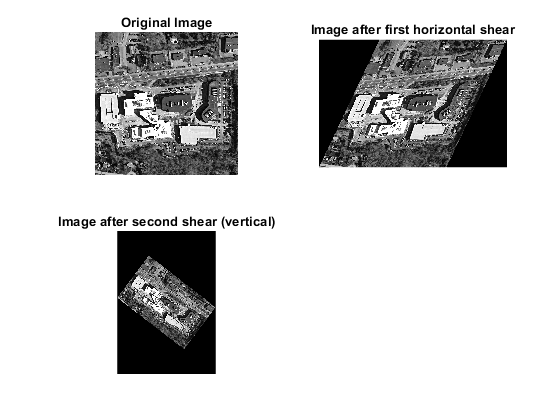 apply third affine transformation
img_shear_hor_3 = imwarp(img_shear_ver_2, xfm_shear_3);
subplot(2,2,4)
imshow(img_shear_hor_3)
title("Image after third shear (horizontal)")
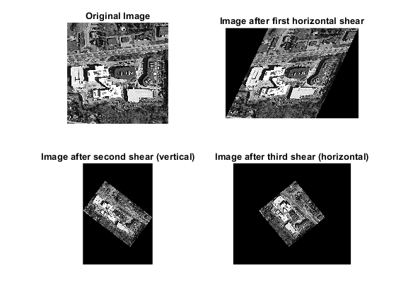